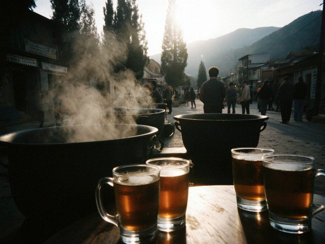
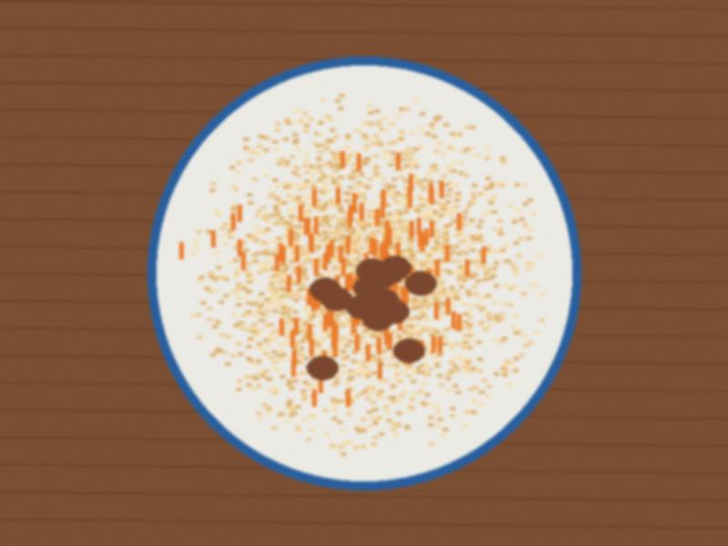

Archive for the ‘Toi’ Category
Plov for the forty days
Not all cooking is for happy days. In March my husband's uncle died, and today was the forty days. The family…
♥ 108 · 0 comments

Tea table for guests
The dastorkon for my sister's guests from Nurzhan. The rule: the table is full before the guest sits. Bread first,…
♥ 62 · 0 comments

A wedding for 300: my notebook
Last week we cooked for my neighbour's daughter. 300 guests, two days, one tent in the yard, two kazans, and the bride…
♥ 112 · 2 comments

Kuurdak after the slaughter
Kuurdak in the big pan. My husband's brother did the meat. Meat in small pieces, liver, kidneys, onion, salt. Fry in…
♥ 24 · 0 comments
The toi menu, in order of arrival
People ask me what to cook for a wedding. It is not a question of what, it is a question of when. The table has a…
♥ 72 · 2 comments

Plov for 20 people
Plov for my nephew's engagement. The kazan is my mother's. For 20 people: 3 kg rice (the yellow devzira if you find…
♥ 138 · 2 comments